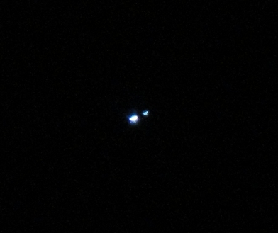

Ap and Bp stars are chemically peculiar main-sequence stars of spectral types A and B (the suffix ‘p’ denoting ‘peculiar’) that display anomalously strong surface abundances of rare-earth and iron-peak elements, global large-scale magnetic fields, and rotation rates markedly slower than normal A- and B-type stars. Their photometric and spectroscopic variability is explained by the oblique rotator model, in which a dipolar magnetic field tilted relative to the rotation axis carries surface chemical spots in and out of view as the star spins.

Morphics / Wikimedia Commons (public domain)
{kind=link}
Ap and Bp stars form the CP2 group in the four-way classification of chemically peculiar upper main-sequence stars introduced by Preston in 1974. The four groups are: CP1 (metallic-line Am stars), CP2 (magnetic Ap/Bp stars), CP3 (mercury-manganese HgMn stars), and CP4 (helium-weak stars). Ap/Bp stars span spectral subtypes roughly B8p to A7p, corresponding to effective temperatures of approximately 8,000–15,000 K, and account for approximately 5–10% of hot main-sequence stars. Chemical peculiarities in upper main-sequence stars were first identified by Antonia Maury in 1897 in her catalogue of spectra of 681 bright northern stars; the CP2 classification scheme itself was formalised by George Preston in 1974.
Magnetic Fields
Ap and Bp stars carry global, large-scale magnetic fields well described by a tilted magnetic dipole. Field strengths range from a few hundred gauss to tens of kilogauss, with most stars in the range 1–20 kG. The record field strength on any main-sequence star is held by HD 215441 (Babcock’s Star) at approximately 33.5 kG, discovered by Horace Babcock; HD 75049 rivals this with a polar dipole field of approximately 42 kG.
Two hypotheses have been advanced for the origin of these fields. The fossil field hypothesis holds that the field is a relic from the interstellar medium, frozen into the star during formation. An alternative invokes magnetic instabilities or a dynamo in the radiative zone. The fossil hypothesis is currently favoured because the fields are large-scale, stable, and do not exhibit the complex activity cycles associated with dynamo processes.
Atomic Diffusion and Chemical Spots
The surface abundance anomalies of Ap/Bp stars are produced by atomic diffusion: the competition between gravitational settling, which draws heavier atoms toward the stellar interior, and radiative levitation, in which photon momentum pushes partially ionised heavy atoms outward. In Ap/Bp stars, stable, non-convective envelopes allow diffusion to act efficiently over stellar lifetimes. Silicon, chromium, strontium, and europium are enhanced by factors of 10 to 10,000 relative to solar values; praseodymium and neodymium show even larger overabundances in some stars. The magnetic field controls where elements accumulate on the surface, producing chemical spots spatially correlated with the magnetic geometry.
The Oblique Rotator Model and Variability
The standard theoretical framework for Ap/Bp variability is the oblique rotator model: the global magnetic dipole is inclined at an angle to the stellar rotation axis. As the star rotates, observers see different aspects of the magnetic field and associated chemical spots, producing periodic photometric and spectroscopic variations with the rotation period. Rotation periods range from approximately 0.5 days to over 160 days in known Ap/Bp stars; the slow rotation relative to normal A/B stars is attributed in part to magnetic braking. Brightness variations are typically 0.01–0.1 magnitudes in visible light. The photometric manifestation of this variability defines the Alpha2 Canum Venaticorum (ACV) class of variable stars. Space photometry from TESS, Kepler, and BRITE has revealed previously unknown complexity in Ap/Bp light curves.
Rapidly Oscillating Ap Stars
A subset of Ap stars — the rapidly oscillating Ap (roAp) stars — additionally pulsate in high-overtone, low-degree, non-radial pressure modes with periods of 5–23 minutes. The class was recognised by Donald Kurtz in 1978 using photometry from the South African Astronomical Observatory; approximately 60 roAp stars are now known, with TESS identifying many new candidates. The pulsation axis aligns with the magnetic axis (the oblique pulsator model), so pulsation amplitudes are modulated by the rotation period. Strong magnetic fields near the magnetic poles may suppress convection and drive the oscillations. HD 101065 (Przybylski’s Star) is an extreme roAp star displaying overabundances of rare-earth elements including actinides, with a pulsation period of 12.15 minutes. Alioth (ε Ursae Majoris) is the brightest Ap star in the sky and shows conspicuous rotational variability in TESS data; 56 Arietis (SX Arietis) is the prototype of the hot Bp silicon subclass. Ap and Bp stars are related to barium stars as members of the broader family of chemically peculiar stars; their spectral classification follows the Harvard spectral classification system with the addition of abundance-based peculiarity designators, and their luminosity class is designated by the Morgan–Keenan scheme.